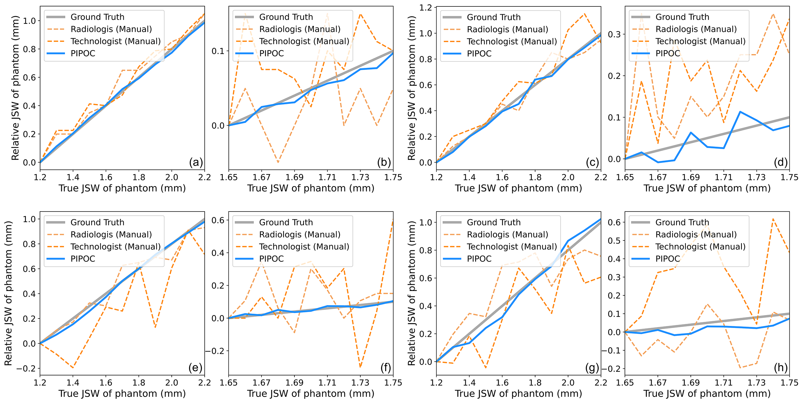

A Sub-pixel Accurate Quantification of Joint Space Narrowing Progression in Rheumatoid Arthritis
Hokkaido University
Nihon University
Rheumatoid arthritis (RA) is a chronic autoimmune disease that primarily affects peripheral synovial joints, like fingers, wrists and feet. Radiology plays a critical role in the diagnosis and monitoring of RA. Limited by the current spatial resolution of radiographic imaging, joint space narrowing (JSN) progression of RA for the same reason above can be less than one pixel per year with universal spatial resolution. Insensitive monitoring of JSN can hinder the radiologist/rheumatologist from making a proper and timely clinical judgment. In this paper, we propose a novel and sensitive method that we call partial image phase-only correlation which aims to automatically quantify JSN progression in the early RA. The majority of the current literature utilizes the mean error, root-mean-square deviation and standard deviation to report the accuracy at pixel level. Our work measures JSN progression between a baseline and its follow-up finger joint images by using the phase spectrum in the frequency domain. Using this study, the mean error can be reduced to 0.0130 mm when applied to phantom radiographs with ground truth, and 0.0519 mm standard deviation for clinical radiography. With the sub-pixel accuracy far beyond usual manual measurements, we are optimistic that the proposed work is a promising scheme for automatically quantifying JSN progression.
Rheumatoid Arthritis, Frequency Domain Analysis, Joint Space Narrowing, Phantom Imaging, Radiology, Computer-aided Diagnosis.
IEEE Journal of Biomedical and Health Informatics (IF: 6.7), October 27, 2022. (Featured Article, Top 7% & Cover Article of Special Issue, 1/12) (2023 IEEE Sapporo Young Professionals Best Paper Award)
Figure 1. The overview of our proposed image registration based JSN progression quantification framework. Our framework can be understood in three steps.§ II-A Use image processing algorithms to detect and calibrate joint positions. § II-B Take a MCP joint as an example, segment the proximal phalanx bone and metacarpal bone based on gradient information. § II-C Combining the discrete Fourier transform and the joint segmentation curve, segment the proximal phalanx bone and metacarpal bone in the phase spectrum. Then, Measure the movement of the proximal phalanx bone and metacarpal bone between baseline and follow-up radiographs respectively by calculating the phase difference, thus resulting in JSN progression quantification.
Figure 2. The measurement result of PIPOC and manual in phantom study. Blue lines are the relative JSW of each image to the first image obtained by PIPOC. Orange dot lines are the difference of manually measured JSW between every image and the first image. We preformed two imaging techniques in our phantom study, radiography: (a)∼(d), Tomosynthesis: (e)∼(h). The phantom of sub-figure (a), (b), (e) and (f) is placed in air. The phantom of sub-figure (c), (d), (g) and (h) is placed in distilled water. The true JSW of phantom is from 1.20 mm to 2.20 mm at increments of 0.10 mm in sub-figure (a), (c), (e) and (g). And it is from 1.65 mm to 1.75 mm at increments of 0.01 mm in sub-figure (b), (d), (f) and (h).
This work aims for computer-aided monitoring and diagnosis of rheumatoid arthritis (RA). We proposed a joint space narrowing (JSN) progression quantization framework based on image registration. Our extensive experiments demonstrate that our proposed framework promises high precision monitoring when compared to two mainstream related works; the scoring framework based on machine learning classification, and the joint space width (JSW) quantization framework based on edge detection. Our proposed framework can fill the gap in monitoring the JSN progression with high sensitivity, and offers a broad application prospect.
In this work, we have improved the full image phase only correlation (FIPOC) algorithm by adding a phase spectrum segmentation step, so that it can measure the displacements of multiple regions at the same time. We named the improved FIPOC algorithm as partial image phase only correlation (PIPOC). As an image registration algorithm, PIPOC is used in JSN progression quantification. Compared with FIPOC, PIPOC can effectively avoid the impact of the segmentation and in-painting process and reduce the phase dispersion in the phase difference spectrum. In our phantom study, PIPOC has a much lower mean error than FIPOC.
The proposed framework implements fully automatic quantization of JSN progression in RA. The algorithm pipeline consists of joint position detection, joint segmentation and JSN progression quantification. In this work, the joint positions are detected with a joint classifier which is trained by haar-like feature based AdaBoost, and a ridge detection-like algorithm is proposed to calculate the segmentation curve. The JSN progression is quantified by PIPOC.
In our phantom studies, and experiments using clinical dataset our algorithm can measure the displacements of upper and lower bones with sub-pixel accuracy. The measured mean error of our algorithm is in range of 11.9% - 35.0% in comparison to manual measurements using radiographic phantom datasets, in range of 6.0% - 16.1% when using tomosynthesis phantom datasets, and with a standard deviation of 0.0519 mm when using radiographic clinical dataset. Our work greatly improves the accuracy and sensitivity of JSN progression quantification, which might help radiologists/rheumatologists to make more timely judgments on diagnosis and prognosis in rheumatoid arthritis patients.
Y. Ou, P., Ambalathankandy, R., Furuya, S., Kawada, T., Zeng, Y., An, T., Kamishima, and M., Ikebe, A Sub-Pixel Accurate Quantification of Joint Space Narrowing Progression in Rheumatoid Arthritis, in IEEE Journal of Biomedical and Health Informatics, vol. 27, no. 1, pp. 53-64, Jan. 2023, doi: 10.1109/JBHI.2022.3217685.
@article{ou2022sub, author={Ou, Yafei and Ambalathankandy, Prasoon and Furuya, Ryunosuke and Kawada, Seiya and Zeng, Tianyu and An, Yujie and Kamishima, Tamotsu and Tamura, Kenichi and Ikebe, Masayuki}, journal={IEEE Journal of Biomedical and Health Informatics}, title={A Sub-Pixel Accurate Quantification of Joint Space Narrowing Progression in Rheumatoid Arthritis}, year={2023}, volume={27}, number={1}, pages={53-64}, doi={10.1109/JBHI.2022.3217685}}
This work was supported in part by the Japan Society for the Promotion of Science (JSPS) Grants-in-Aid for Scientific Research (KAKENHI) under Grants 18H05288 and 21K07611, and in part by JST SPRING under Grant JPMJSP2119.